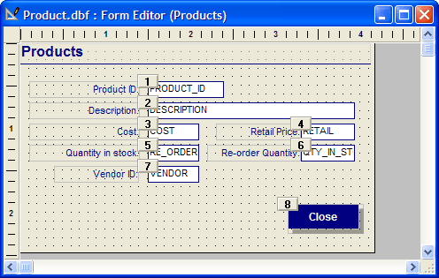
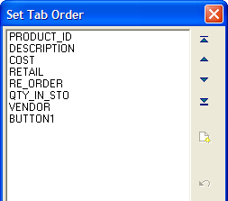
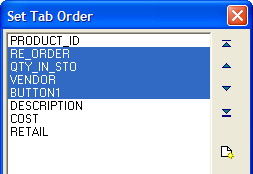

Setting the Tab Order
The tab order controls the order in which the cursor moves on the form between fields, buttons, tabbed controls, and browse objects. By default, the tab order is set so that the cursor moves from object-to-object in the order in which they were placed.
There two ways to set the tab order: by Example or by Table.
Setting the Tab Order by Example

Setting the Tab Order by Example
Setting the tab order by example lets you click on numbered buttons to set the tab order of the fields.
To set the tab order by example:
Select Arrange > Set Tab Order > Set Tab Order by Example.
Numbered buttons appear next to each object. Click the objects' buttons in the appropriate order.
 TIP : There is a shortcut
you can use when setting the tab order. When you come to a series of objects
that are in the correct order, hold down SHIFT,
and click the last object in the series. For example, if there are ten
objects on a form, and objects one through five are correct, hold down
SHIFT and click the button next to object five.
From there you can continue to set the appropriate order for objects six
through ten.
TIP : There is a shortcut
you can use when setting the tab order. When you come to a series of objects
that are in the correct order, hold down SHIFT,
and click the last object in the series. For example, if there are ten
objects on a form, and objects one through five are correct, hold down
SHIFT and click the button next to object five.
From there you can continue to set the appropriate order for objects six
through ten.
Setting the Tab Order by Table
Setting the tab order by table lets you manipulate the order of multiple fields by grouping and moving them together.

Setting Tab Order by Table

Shifting the Tab Order of Multiple Fields
All the fields are displayed in their current tab order, letting you arrange them by moving fields or groups of fields up or down to change their tab order.
To set the tab order by table:
Click the Arrange menu and select Set Tab Order > Set Tab Order by Table.
Click on one or more fields to select them.
Use the arrow buttons to move the field(s) up or down, changing the tab order hierarchy.